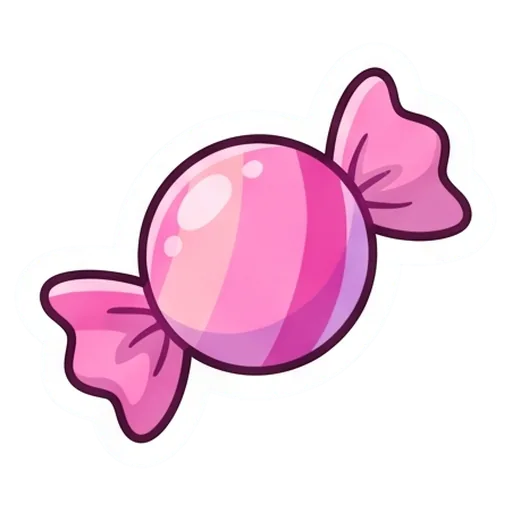
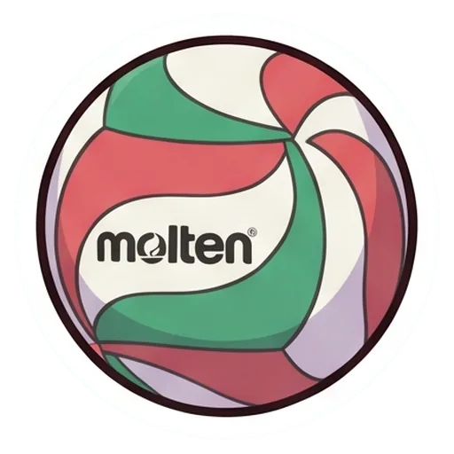

Zucchero filato
Il kit di ACE. Ogni schermata si costruisce con questi colori, questi caratteri, questi oggetti e queste icone: se un pezzo non è qui, prima si aggiunge al kit.

Lani

Papà

Mamma

Leo

Nonno Fausto

Bart

Lady
Colori
Fondo panna, testi prugna, azioni fucsia scuro: sono le tre coppie che garantiscono la lettura. Il fucsia chiaro e il lilla colorano solo la strada e i progressi, mai il testo.
Panna
#FFF6FA, fondo di ogni schermata
Prugna
#3D2350, testi
Prugna chiaro
#5E4470, testi secondari
Fucsia scuro
#C2185B, bottoni e azioni
Fucsia
#E23D8E, strada fatta, progressi
Rosa
#FFC8E1, bordi e superfici
Lilla
#CDB8F5, strada da fare
Azzurrino
#BFE6FF, cielo del mattino
Burro
#FFE27A, stelle e oro
Notte
#2F2A6E, cielo della sera
Caratteri
Baloo 2 per titoli e numeri, Nunito per tutto il resto. Due pesi soli: 800 per ciò che si deve vedere subito, 600 per il testo da leggere.
Titolo di schermata
Baloo 2, 32
Pronta per giovedì?
Numeri
Baloo 2, 40
1.240
Titolo di sezione
Baloo 2, 20
Compiti per domani
Testo
Nunito, 16
Grammatica: pagine 340–352 e la scheda sui complementi.
Etichetta
Nunito, 13 nero
10 punti alla prossima tappa
Oggetti di gioco
Disegnati nello stesso stile degli avatar, con il contorno bianco da figurina. Compaiono grandi: mai sotto i 32 pixel.

Forziere
premio nascosto lungo il percorso

Forziere aperto
il premio si svela
Forziere della cima
l'arrivo di giugno
Stella
settimana conquistata
Stella da prendere
settimana in corso
Coppa
traguardi grandi
Medaglia
pagella, verifiche da 9

Bandierina
dove dice il calendario

Tappa
ancora da raggiungere

Tappa attuale
dove si trova Lani

Tappa fatta
già raggiunta

Caramella
il simbolo dei punti
Razzo
la rimonta
Lucchetto
premio non ancora aperto
Regalo
premio ottenuto

Pallone
partite e allenamenti
Icone di servizio
Piccole e nitide, per la barra in basso, le liste e i bottoni. Set Phosphor, spessore bold, colore del testo; nella barra in basso la sezione attiva usa la versione piena in fucsia scuro.
Oggi
Studio
Sera
Astra
Verifiche
R-Evolution
Cartella
Borsa sport
Compiti
Flash card
Da firmare
Calendario
Dieci minuti
Gesti di casa
Foto pagine
Non ho capito
Avvisi
Fatto
Pezzi dell'interfaccia
I pezzi che si ripetono in tutte le schermate. Le cose da toccare sono alte almeno 48 pixel: Lani le usa al volo, spesso con una mano sola.
Bottoni
Punti e stelle
1.240
Voci da spuntare
Cartella e borsa
Matematica
Antologia
Diario e astuccio
Ginocchiere
Borraccia
Avanzamento della sera
2 su 5, già +15 punti
Avviso dei punti
Compiti fatti: +10
Barra in basso
Suoni
Sei suoni brevi, sempre attivi: a scuola il telefono non si usa. Li scelgo nei pacchetti gratuiti Kenney, Interface Sounds e UI Audio. Su Android ogni premio dà anche una vibrazione breve; su iPad solo il suono.
Spunta una voce
un clic morbido
ogni casella della sera e del mattino
Punti che entrano
un tintinnio breve
quando il contatore sale
Stella della settimana
uno scintillio
la domenica sera, se la stella è presa
Forziere
uno scrigno che si apre, poi campanelli
solo quando si apre davvero
Tappa raggiunta
una fanfara corta
a ogni tappa del percorso
Manca qualcosa
un bip gentile, mai un suono d'errore
la sera, se la cartella non è chiusa